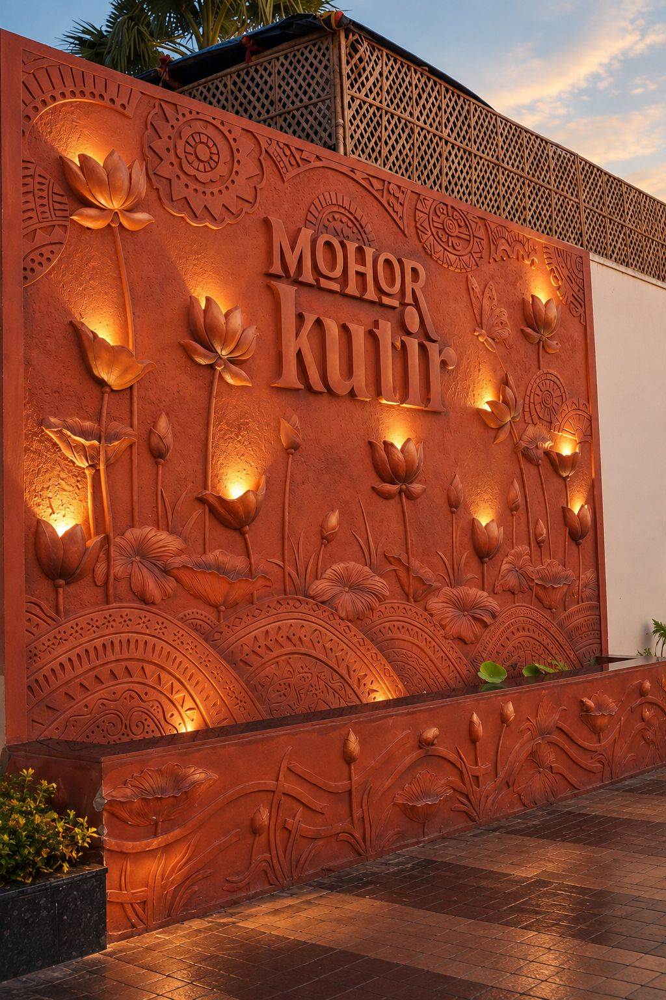

On the Suri–Bolpur road, a short drive from Bolpur station and the Sonajhuri forest.
For rooms, dining, or help arranging a day at Sonajhuri, the front desk is the fastest way to reach us.
Mohor Kutir Resorts LLP
Ballavpur, Suri–Bolpur Road
West Bengal 731236, India

Mohor Kutir sits within easy reach of the landmarks that give Santiniketan its name.
Santiniketan Stories has the fuller history of the ground Mohor Kutir stands on — a good place to start before you visit.